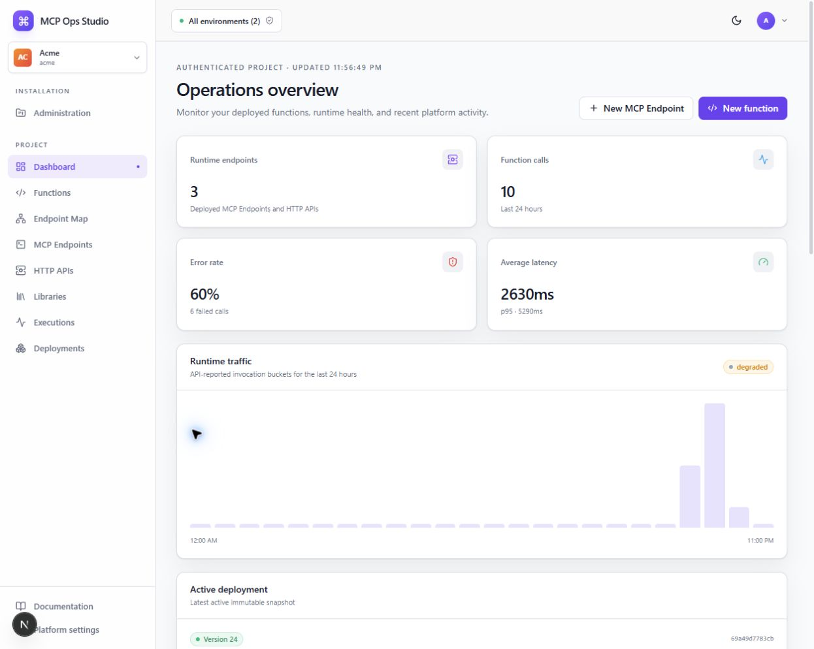
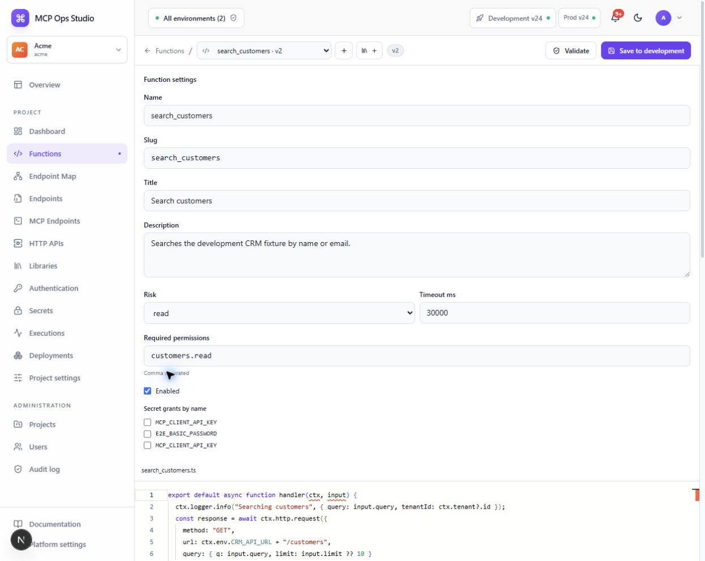
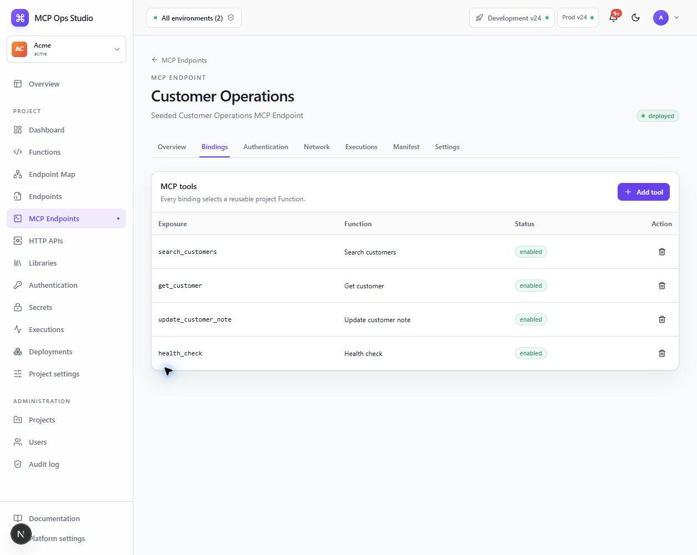

Author in TypeScript
Use a single async handler contract, JSON Schema inputs and outputs, and reviewed virtual modules.
handler(ctx, input)
Build reusable TypeScript functions once. Bind them to MCP tools and HTTP routes. Ship immutable snapshots through a secure, observable runtime.
export default async function handler(ctx, input) {
const customer = await ctx.functions
.call("get_customer", {
customerId: input.customerId
});
return await ctx.http.request({
method: "POST",
url: ctx.env.SUPPORT_API_URL + "/tickets",
body: { customer, subject: input.subject }
});
}MCP tools and HTTP routes are typed bindings, not parallel implementations. Composition stays in TypeScript with controlled platform capabilities.
Use a single async handler contract, JSON Schema inputs and outputs, and reviewed virtual modules.
handler(ctx, input)
Expose project functions as tools over stateless Streamable HTTP using the official protocol schemas.
POST /mcp/:project/:endpoint
Map typed routes to the same functions and run them through the same authorization and invocation pipeline.
/http/:project/:endpoint/:path
Move from runtime health to implementation and endpoint exposure without losing the active project or deployment context.



Two deployable roles keep control-plane work separate from user-code execution. PostgreSQL and Redis provide durable state and coordination.
Every endpoint runs from one active, immutable project snapshot. A failed build can never partially replace live traffic.
Restore every endpoint artifact from an earlier completed deployment and record the operation in the audit log.
Literal function calls are resolved transitively, checked for cycles, pinned to versions, and limited to eight levels.
User functions receive a narrow runtime context instead of raw infrastructure. Permissions, secrets, network access, validation, and redaction are enforced around every invocation.
Read the security model →A pnpm monorepo separates applications from shared contracts, persistence, reviewed modules, and execution infrastructure.
Bring up the complete development environment with Docker Compose, source synchronization, seeded examples, and watch processes.
$ git clone https://github.com/fabian-arnold/McpOpsStudio.git
$ cd McpOpsStudio
$ corepack enable
$ pnpm install
$ pnpm db:generate
$ cp .env.example .env
$ pnpm dev